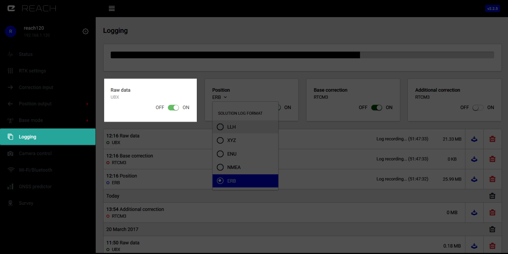
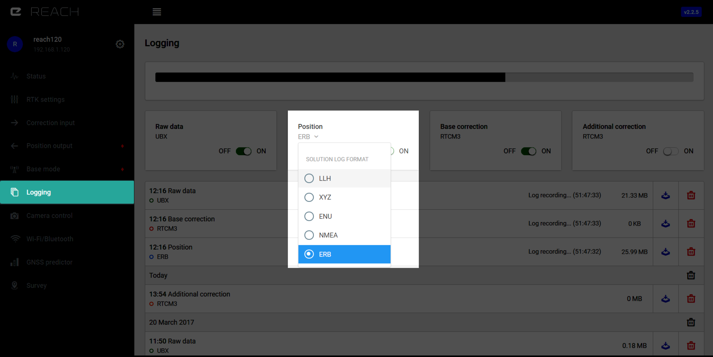
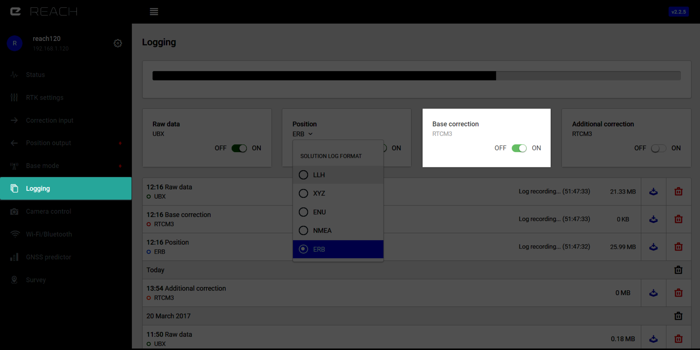
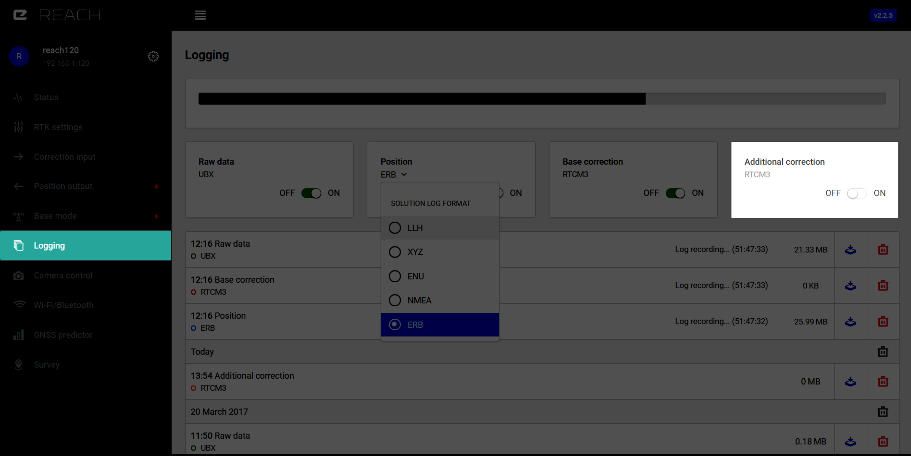

Journalisation
ReachView supporte quatre flux de logs simultanés. Le comportant lorsque la mémoire est pleine ou le découpage des logs peut être spécifié dans les paramètres. Chaque flux de log peut être activé ou désactivé, une fois activé les logs continuent à être écrits même après un redémarrage de l'appareil. Après un redémarrage des nouveaux fichiers de logs sont créés automatiquement.
Données brutes (Raw data)¶

Les donnée brutes sont enregistrées au format UBX, qui peut être convertit en Rinex après téléchargement en utilisant l'utilitaire RTKCONV. Les marques temporelles sont aussi enregistrées dans ce fichier.
Position¶

Les coordonnées peuvent être enregistrées sous différents formats.
LLH
Format texte simplifié pour la Latitude, Longitude et Altitude ainsi que le statut de la solution. La définition du format se situe dans le manuel RTKLIB ver. 2.4.2 à la page 102.
XYZ
Format texte simplifié pour les coordonnées X, Y, Z ECEF ainsi que le statut de la solution. La définition du format se situe dans le manuel RTKLIB ver. 2.4.2 à la page 102.
ENU
Format texte simplifié pour les composantes Est (East), Nord (North) et Haut (UP) du référentiel ainsi que le statut de la solution. La définition du format se situe dans le manuel RTKLIB ver. 2.4.2 à la page 102.
NMEA 0183
Le format standard le plus répandu du secteur. Messages supportés: GPRMC, GPGGA, GPGSA, GLGSA, GAGSA, GPGSV, GLGSV et GAGSV. La définition du format se situe dans le manuel RTKLIB ver. 2.4.2 à la page 102.
ERB
Utilisé pour la communcation avec Ardupilot, la description du format se situe ici.
Correction de la station fixe (Base correction)¶

Les logs de correction provenant de la station fixe (base). Le format est défini en fonction de l'onglet de corrections en entrée "correction input".
Correction supplémentaire (Additional correction)¶

Les logs provenant de la correction supplémentaire.Le format est défini en fonction de l'onglet de corrections en entrée "correction input".